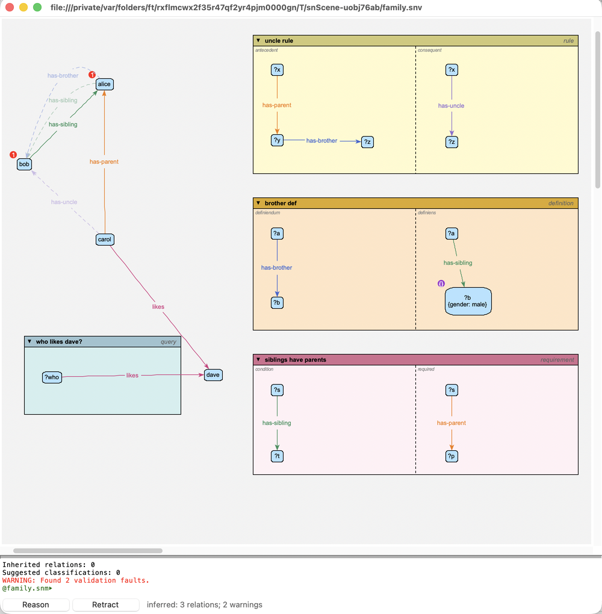

Reasoning¶
The reasoner works out what follows from a model: what’s inherited, what’s implied by relations’ properties, what rules and definitions conclude – and what’s wrong. It uses clingo, an answer set programming system.
Reasoning¶
Reason (▶, on the reasoning toolbar along the bottom of the window, or reasoning | reason on the background menu) reasons over the window’s model; Retract (↺) takes what it inferred back out again. Reason silently (▷, or reasoning | reason silently) reasons too, but doesn’t add what it infers to the views – only the problems are marked, and only a summary is printed: eg: so that queries find what the rules conclude without cluttering the canvas. (Hover over a button to see what it does.) The toolbar also says what the last reason found – how many relations and new objects it inferred, and how many problems – and, at its right, whether the model can be edited: a pencil, crossed out in red if it can’t be here. Click the pencil (or choose Edit | Lock view) to lock the view, so it can’t change the model – not even by dragging the end of an arc to another object – but can still be arranged (moving things, erasing them from view, layouts) and saved; do it again to unlock it. The lock is saved with the view, and other views of the model aren’t locked. A read-only model’s view (eg: the system model, or the base rules) can’t be unlocked. (View | Reasoning toolbar hides it, or shows it again.) The report goes to the terminal pane, in sections:
- Violations
Errors and warnings: relations whose source or destination is outside their type’s domain or range, isa cycles, an object that isa an individual, redundant parents, irreflexive or asymmetric relations broken, relation types tagged with conflicting properties, and rules the reasoner can’t use.
- Inferred relations
Relations implied by the relational properties (symmetric, transitive, …) of their types.
- Rule conclusions
What the rules and definitions concluded: relations, attribute values, types, and new objects (see Contexts: Rules, Definitions, Queries, Constraints and Requirements).
- Inherited relations
Relations an individual has because one of its types has them.
- Suggested classifications
Types an object could be given to make a relation it’s in fit its type’s domain or range.
The results are also shown on the canvas, in every view of the model:
inferred relations (and the relations and types rules conclude) are added to the model as inferred relations, drawn in their usual look, but faded, with dashed lines; inherited relations the same, with dotted lines. They’re relations like any other – they take part in the layouts, for example – but they aren’t saved with the model or the view, and adding them doesn’t count as a change to either (even a read-only model can be reasoned over). They’re the reasoner’s: they can’t be edited, removed, or related to anything – but mark as asserted in an inferred relation’s menu makes it an ordinary (asserted) part of the model, saved with it (not in a read-only model). It can be undone;
attribute values rules conclude for the model’s own objects (eg: from a definition’s constraints) are added as inferred attributes: they’re used like any other value, but aren’t saved, and an object’s own (given) value always wins over one inferred. The attribute editor shows an inferred value greyed out, marked I, with an assert button: press it, then Save Changes, to make it an ordinary value;
objects with violations get a red E marker: hover over it for the problems, or choose show error report from the object’s menu.

After reasoning: alice has-sibling bob as well (has-sibling is symmetric); the definition concludes that alice has-brother bob, and that fires the uncle rule: carol has-uncle bob. And the requirement (see Contexts: Rules, Definitions, Queries, Constraints and Requirements) warns that alice and bob have siblings, but no parents: hover over their markers to see.¶
Inferred relations are shown only between objects that are both shown in the view.
The results stay until you reason again or choose reasoning | clear
reasoning – they aren’t updated as you edit, so reason again after
changing the model. Reasoning again keeps the inferred relations that are
still inferred (where you’ve put them), adds new ones, and removes the
rest. Typing reason (or clear reasoning) in the terminal does the
same as the button.
Switching rules off¶
To try a model without one of its rules, definitions, constraints or
requirements, disable it: choose disable from its menu (or give it a
disabled attribute that’s true – every context has one, false to start
with). The reasoner ignores it, and it’s drawn with a red slash through it.
enable (or undo) puts it back. Reason again to see the difference.
Highlights¶
answer query and show conclusions (see Contexts: Rules, Definitions, Queries, Constraints and Requirements) highlight the objects they found. reasoning | clear highlights – or Esc – clears them.
Tests and conclusions¶
It’s worth keeping the two roles of a pattern straight:
a query, a rule’s antecedent, and either side of a definition when it’s being matched, only test the model: nothing in them is asserted;
a rule’s consequent (and a definition’s other side) is concluded for each match: its relations, its variables’ types and its variables’ constraints all become conclusions.
None of the reasoner’s conclusions are added to the model: they’re shown, and reported, but the model still says only what you drew. (Use them as hints: draw the ones you want to keep.)
Validation¶
model | validate (Option-V) is a quicker check, done without the reasoner: it checks each object’s own consistency (its attributes, its types, its relations’ ends). Its problems are shown the same way, with E markers.